P34 父级状态 C-r1
全部为待审核提案；下方子页面仅作上下文，不扩大已批准范围。
打开交互原型 · 范围与依据
initial-loading · 1440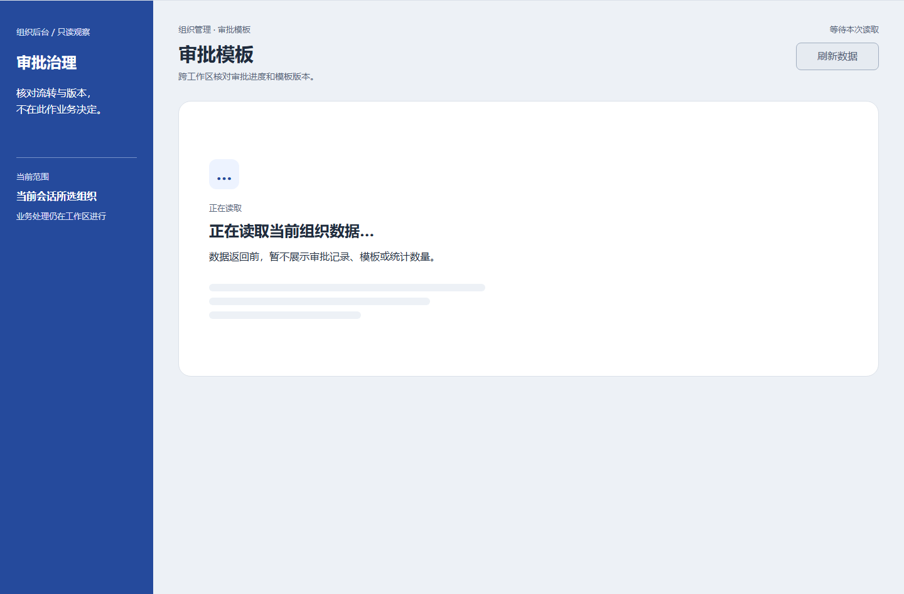
ready · 1440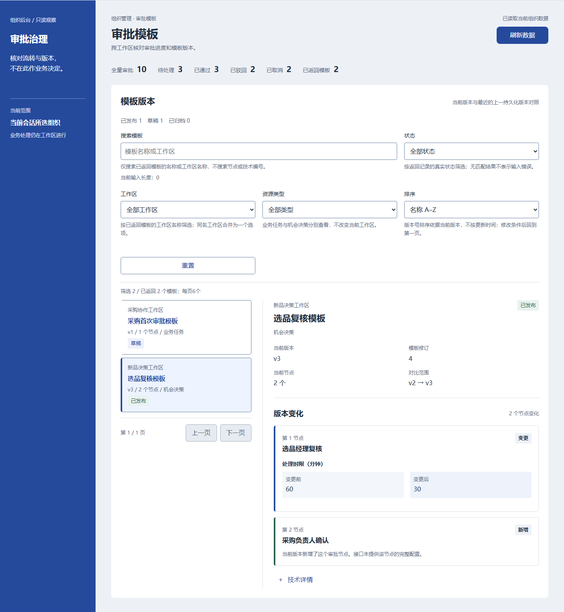
ready-focus · 1440background-refreshing · 1440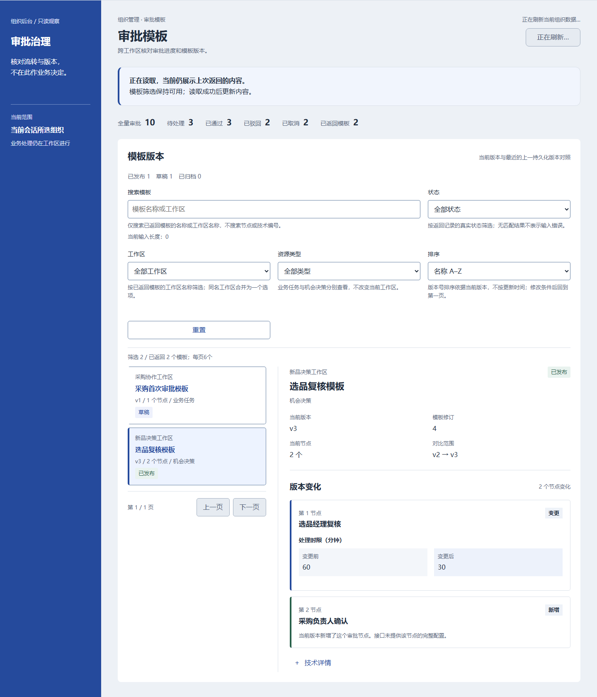
initial-server-error · 1440initial-server-error-focus · 1440initial-service-blocked · 1440initial-service-blocked-focus · 1440initial-version-conflict · 1440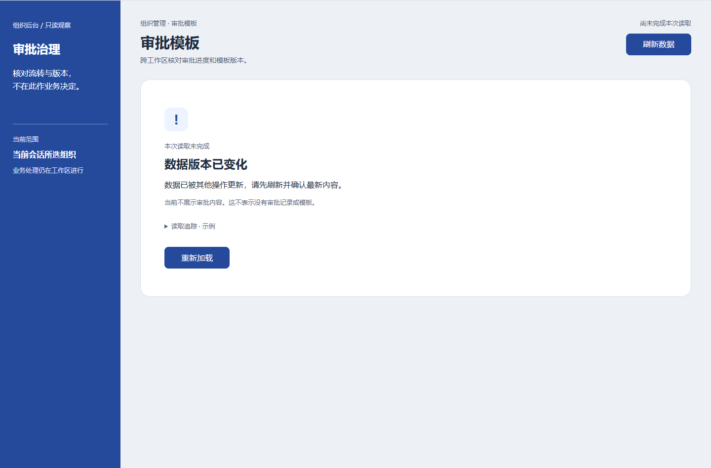
initial-version-conflict-focus · 1440initial-rate-limited · 1440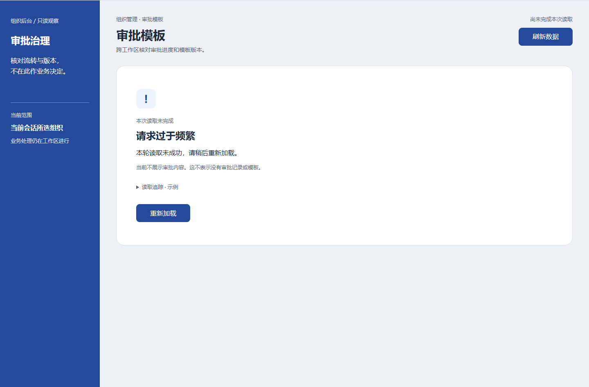
initial-rate-limited-focus · 1440initial-session-expired · 1440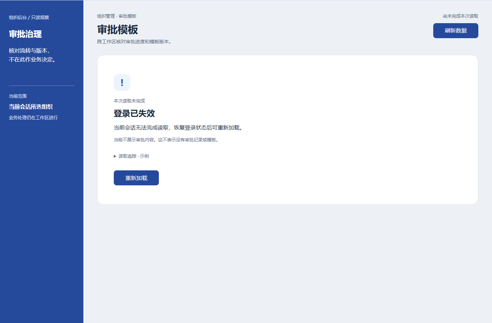
initial-session-expired-focus · 1440initial-permission-forbidden · 1440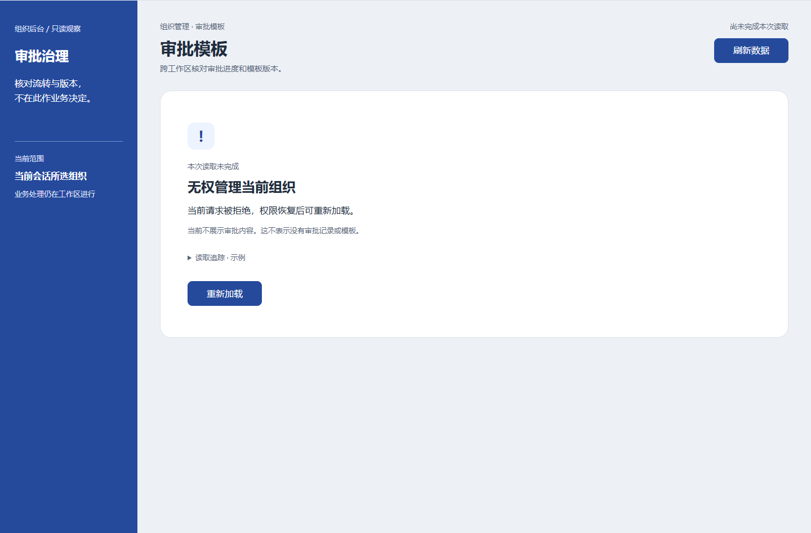
initial-permission-forbidden-focus · 1440initial-network-unavailable · 1440initial-network-unavailable-focus · 1440background-server-error · 1440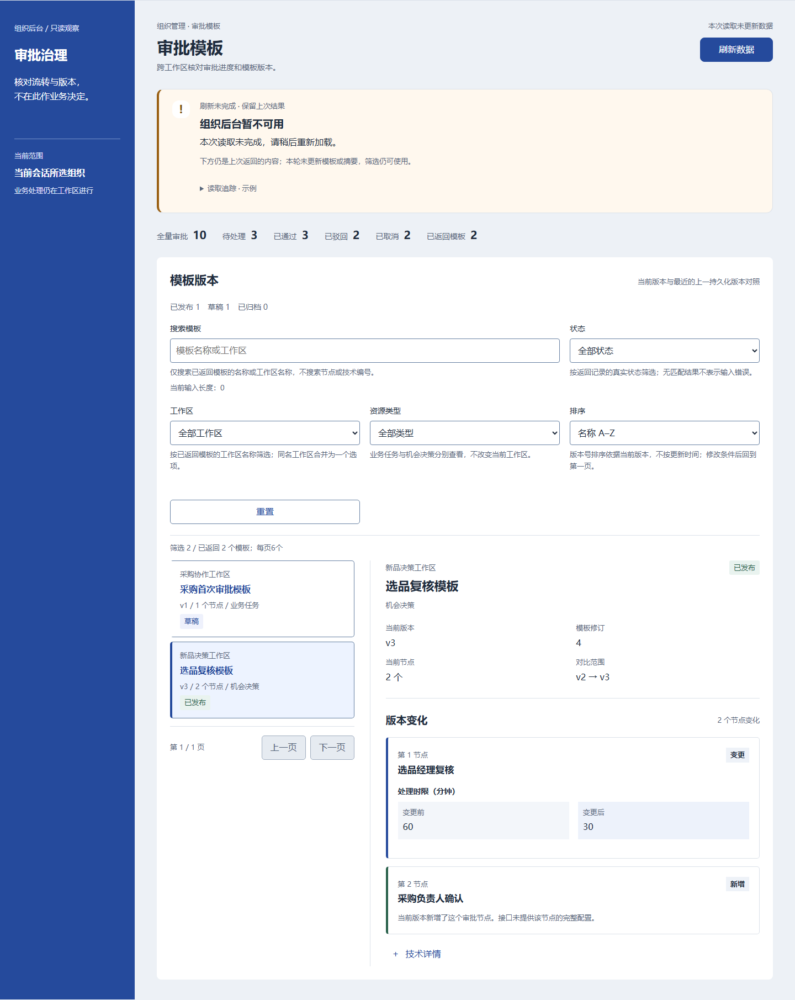
background-server-error-focus · 1440background-service-blocked · 1440background-service-blocked-focus · 1440 background-version-conflict · 1440background-version-conflict-focus · 1440
background-version-conflict · 1440background-version-conflict-focus · 1440 background-rate-limited · 1440
background-rate-limited · 1440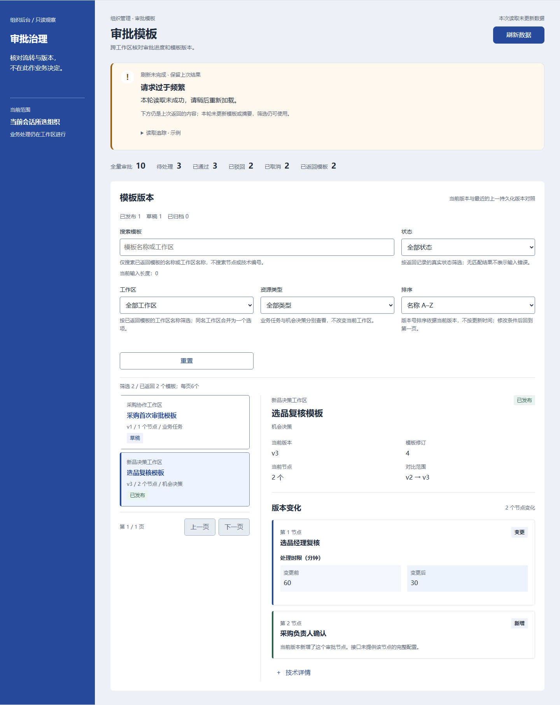
background-rate-limited-focus · 1440 background-session-expired · 1440background-session-expired-focus · 1440background-permission-forbidden · 1440background-permission-forbidden-focus · 1440background-network-unavailable · 1440background-network-unavailable-focus · 1440
background-session-expired · 1440background-session-expired-focus · 1440background-permission-forbidden · 1440background-permission-forbidden-focus · 1440background-network-unavailable · 1440background-network-unavailable-focus · 1440 initial-server-error-hover · 1440initial-server-error-pressed · 1440ready-hover · 1440ready-pressed · 1440initial-permission-forbidden-trace · 1440
initial-server-error-hover · 1440initial-server-error-pressed · 1440ready-hover · 1440ready-pressed · 1440initial-permission-forbidden-trace · 1440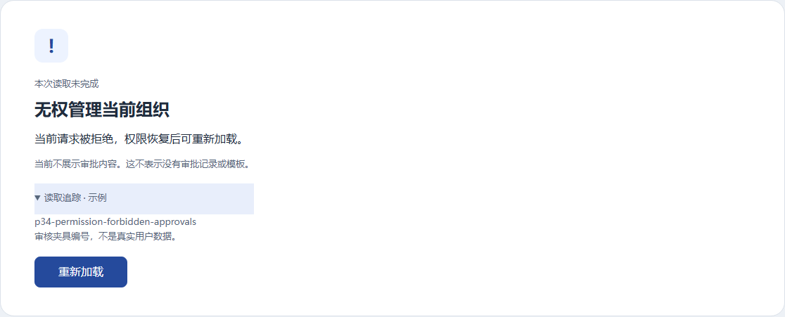
initial-loading · 390ready · 390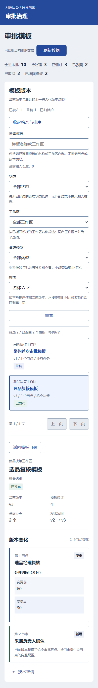
ready-focus · 390background-refreshing · 390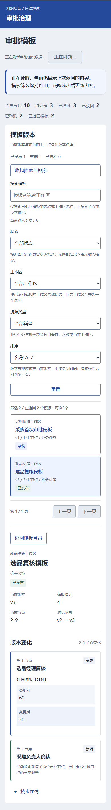
initial-server-error · 390initial-server-error-focus · 390initial-service-blocked · 390initial-service-blocked-focus · 390initial-version-conflict · 390initial-version-conflict-focus · 390initial-rate-limited · 390initial-rate-limited-focus · 390initial-session-expired · 390initial-session-expired-focus · 390initial-permission-forbidden · 390initial-permission-forbidden-focus · 390initial-network-unavailable · 390initial-network-unavailable-focus · 390background-server-error · 390background-server-error-focus · 390 background-service-blocked · 390
background-service-blocked · 390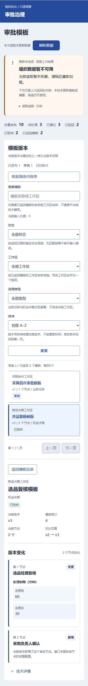
background-service-blocked-focus · 390 background-version-conflict · 390background-version-conflict-focus · 390
background-version-conflict · 390background-version-conflict-focus · 390 background-rate-limited · 390
background-rate-limited · 390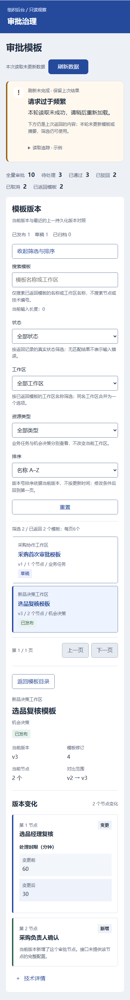
background-rate-limited-focus · 390 background-session-expired · 390background-session-expired-focus · 390background-permission-forbidden · 390background-permission-forbidden-focus · 390background-network-unavailable · 390background-network-unavailable-focus · 390initial-server-error-hover · 390initial-server-error-pressed · 390ready-hover · 390ready-pressed · 390initial-permission-forbidden-trace · 390
background-session-expired · 390background-session-expired-focus · 390background-permission-forbidden · 390background-permission-forbidden-focus · 390background-network-unavailable · 390background-network-unavailable-focus · 390initial-server-error-hover · 390initial-server-error-pressed · 390ready-hover · 390ready-pressed · 390initial-permission-forbidden-trace · 390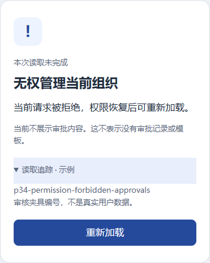